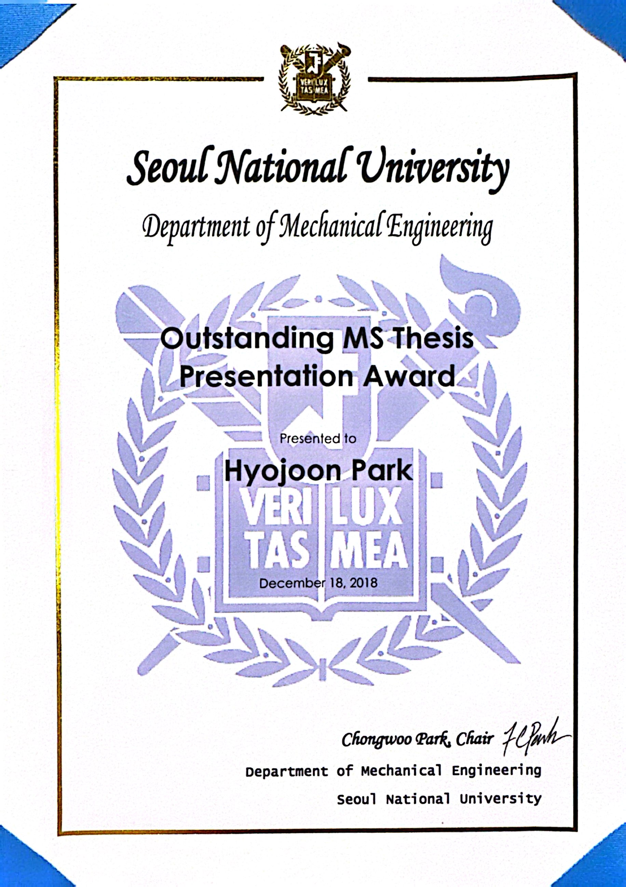

|
Near-realtime Facial Animation by Deep 3D Simulation
Super-resolution
, Sangeetha Grama Srinivasan, Matthew Cong, Doyub
Kim, Byungsoo Kim, Jonathan Swartz, Ken Museth, and Eftychios Sifakis
ACM Transactions on Graphics (TOG) 2024 paper | github | presented at SIGGRAPH ASIA 2024 |
|
|

|
Our work is featured on the 📺 Two Minute Papers channel! |
|
Collagen Fiber Centerline Tracking in Fibrotic Tissue via Deep Neural
Networks with Variational Autoencoder-based Synthetic Training Data Generation
*, Bin Li*, Yuming Liu, Michael S. Nelson, Helen M.
Wilson, Eftychios Sifakis, and Kevin W. Eliceiri. (* equal contributions)
Medical Image Analysis 2023 paper | github |
|
|
|
|
Capturing Detailed Deformations of Moving Human Bodies
He Chen, , Kutay Macit, and Ladislav Kavan
ACM SIGGRAPH 2021 paper | project page | multi-camera calibration codes |
|
|
|
|
Adaptive Precision-Enhancing Hand Rendering for Wearable Fingertip
Tracking Devices
and Jung-Min Park
IEEE/RSJ International Conference on Intelligent Robots and Systems (IROS) 2020 paper | short video |
|
|
|
|
Dental Simulator with Increased Z-width of Haptic Rendering
, Myungsin Kim, and Dongjun Lee
AsiaHaptics 2018 MS thesis | short paper | short video | long video[*] [*] Outstanding MS Thesis Presentation Award (Seoul National University 2019) |
|
|
|

|
Stretchable Skin-Like Cooling/Heating Device for Reconstruction of
Artificial Thermal Sensation in Virtual Reality
Jnwoo Lee, Heayoun Sul, Wonha Lee, Kyung Rok Pyun, Inho Ha, Dongkwan Kim, , Hyeonjin Eom, Yeosang Yoon, Jinwook Jung, Dongjun
Lee, and Seung Hwan Ko
Advanced Functional Materials 2020 paper |
|
|

|
Highly Stretchable and Oxidation-resistive Cu Nanowire Heater for
Replication of the Feeling of Heat in a Virtual World
Dongkwan Kim, Junhyuk Bang, Wonha Lee, Inho Ha, Jinwoo Lee, Hyeonjin Eom, Myungsin
Kim, Jungjae Park, Joonhwa Choi, Jinhyung Kwon, Seungyong Han, , Dongjun Lee, and Seung Hwan Ko
Journal of Materials Chemistry A 2020 paper |
|
|
|
Rigid-body Collaborative Manipulation among Remote Users with Wearable
Cutaneous Haptic Interfaces
Myungsin Kim, WonHa Lee, , Junghan Kwon, Yong-Lae
Park, and Dongjun Lee
AsiaHaptics 2018 paper | video |
|
|
|
|
|
Design and Performance Evaluation of Wearable Haptic Interfaces
WonHa Lee, Myungsin Kim, , and Dongjun Lee
International Conference on Control, Automation and Systems 2018 |
|
|
Wearable Cutaneous Haptic Interface with Soft Sensors and IMUs
Yongjun Lee, Myungsin Kim, Yongseok Lee, , and
Dongjun Lee
Korea Robotics Society Annual Conference 2018 |
{kind=link}